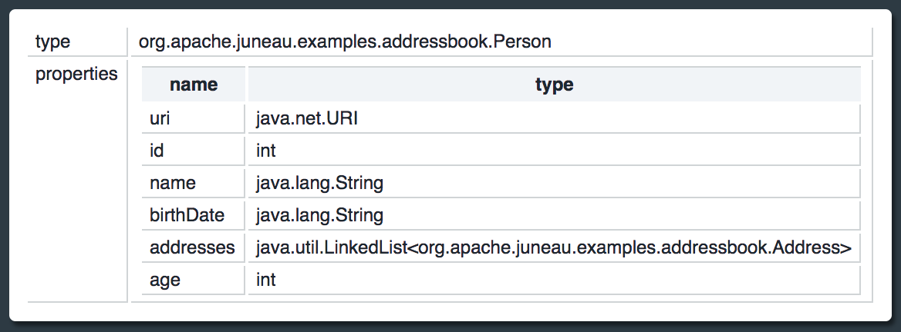

Predefined Helper Beans
The {@link org.apache.juneau.rest.helper} package contains some reusable beans that are useful for
creating linked items in HTML views.
The {@link org.apache.juneau.rest.helper.ResourceDescription} class is a bean with name/description
properties for labeling and linking to child resources.
The following examples is pulled from the REST examples:
public class PredefinedLabelsResource extends BasicRestServlet {
@RestMethod(name=GET, path="/")
public ResourceDescription[] getChildMethods() {
return new ResourceDescription[] {
new ResourceDescription("beanDescription", "BeanDescription"),
new ResourceDescription("htmlLinks", "HtmlLink")
};
}
}
It get rendered as a table of name/description columns with links to child methods:

The internals of the class show it simply has two bean properties with a link annotation
defined on the name property:
public class ResourceDescription {
@Html(link="servlet:/{name}")
public Object getName() {...}
public Object getDescription() {...}
}
The {@link org.apache.juneau.rest.helper.BeanDescription} class provides a simple view
of a bean and it's properties.
@RestMethod(name=GET, path="/beanDescription")
public BeanDescription getBeanDescription() {
return new BeanDescription(Person.class);
}
This example renders the following:

The {@link org.apache.juneau.html.annotation.HtmlLink @HtmlLink} annotation can also be useful
for rendering custom hyperlinks:
@RestMethod(name=GET, path="/htmlLinks")
public ALink[] htmlLinks() {
return new ALink[] {
new ALink("apache", "http://apache.org"),
new ALink("juneau", "http://juneau.apache.org")
};
}
@HtmlLink(nameProperty="n", hrefProperty="l")
public static class ALink {
public String n, l;
public ALink(String n, String l) {
this.n = n;
this.l = l;
}
}
The {@link org.apache.juneau.dto.LinkString Action} bean is a predefined @HtmlLink bean provided
to simplify specifying actions.
The following is equivalent to above.
@RestMethod(name=GET, path="/htmlLinks")
public Action[] htmlLinks() {
return new Action[] {
new Action("apache", "http://apache.org"),
new Action("juneau", "http://juneau.apache.org")
};
}
Both examples render the following consisting of a list of hyperlinks: